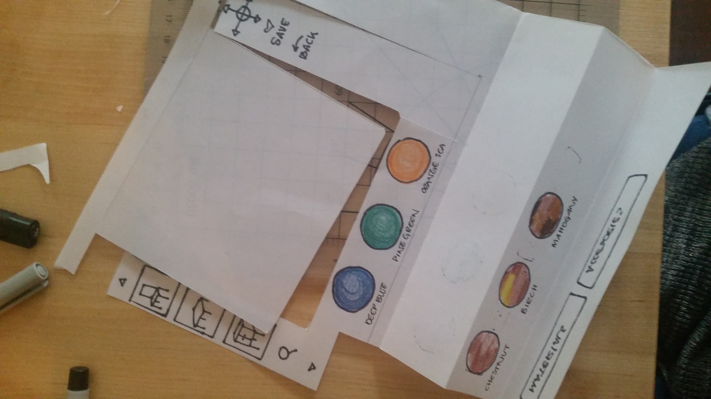
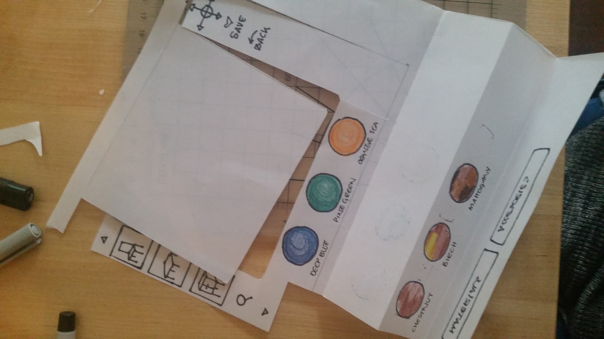

https://youtu.be/8-IPCp_U8gA

https://youtu.be/8-IPCp_U8gA
As I was working on the physical prototype, I was able to detect different breakdowns that I didn’t stop to think before in a user experience and design perspective.
Testing with a prototype that is so low fidelity, allowed me to not spend too much time thinking if what I was doing would work or not. But I have learned to be weary of not leaving all of the work to the user, your prototype needs to make sense for them no to become frustrated, even if it is your first attempt. Feedback that was unexpected from testers is that the sequence of steps for furniture selection that I thought was somewhat obvious, wasn’t for them.
I would start using code to create the frame around my application. But before that, I would start spending more time defining what the customers truly seek in an application that would allow to experience seeing furniture in real time in a real space.